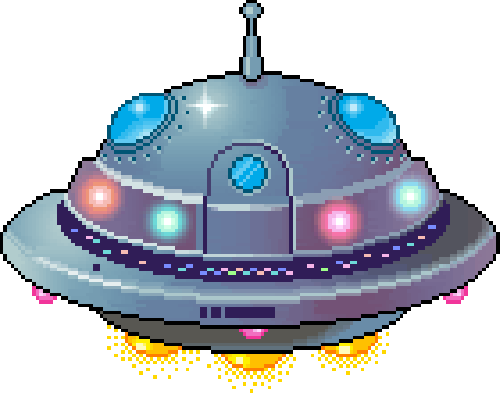

The Astronauts of the TSF have won the fight, but the war has just begun. The loss of the Lieutenant 'Zapman' is enough to anger that of Emperor 'Zurgothrax,' the leader of an Alien Empire, whose sought vengeance for their humiliation from the first wave.